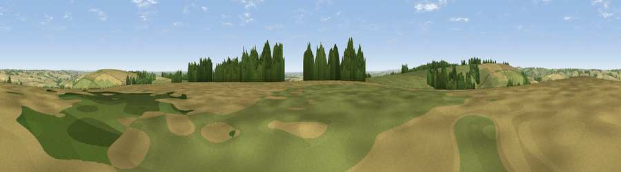

Woodminton Down
#19949 in England · top 24% of its area beats it · near BowerchalkeThe view, rendered

A 360° render of this exact spot computed from the terrain model, tree cover and land cover — summer colours, afternoon light, calibrated against photographs of famous viewpoints. Real trees, hedges and buildings will differ in detail.
The panorama
Grey silhouette: terrain skyline in each direction (720 bearings, Earth curvature and refraction included). Dashed green: skyline with trees (+15 m) and buildings (+8 m) as obstacles. Blue strip: how far the ground is visible on each bearing.
Where the view opens
Wedge length = distance to the farthest visible ground on that bearing (vegetation-aware). Rings at 10, 25 and 50 km.
What fills the view
50% cropland · 40% grassland · 10% woodland
Angular shares of the visible panorama (visual magnitude), not map area. Landscape diversity 0.42 (0–1 Shannon).
Key numbers
More beautiful places nearby
The staircase of upgrades: each row has a higher view potential than everything closer. Driving times are estimates from straight-line distance, calibrated against real road routing — check an actual route before setting out.
| Place | Direction | Drive | Score |
|---|---|---|---|
| Marleycombe Hill | ENE · 2 km | ~5 min | 63.3 |
| Trow Down | W · 4 km | ~9 min | 67.5 |
| Monk's Down | W · 7 km | ~15 min | 74.4 |
| Viewpoint near Berwick St John | W · 8 km | ~17 min | 78.2 |
| Viewpoint near Harman's Cross | S · 40 km | ~59 min | 80.8 |
| Viewpoint near Studland | S · 40 km | ~60 min | 82.2 |
| Ballard Down | S · 40 km | ~60 min | 83.2 |
| Viewpoint near Harman's Cross | S · 41 km | ~60 min | 84.1 |
50.99342, -1.98954 · source: osm peak · position refined by local search. Computed location — check access rights before visiting.